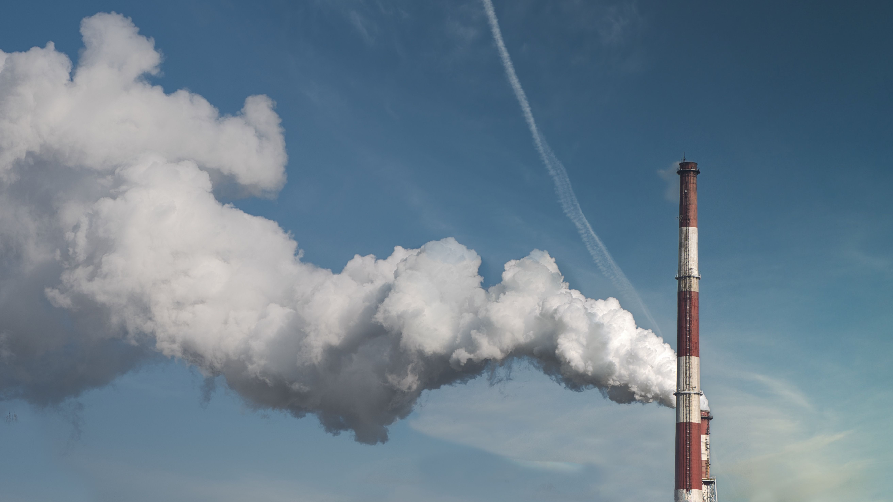
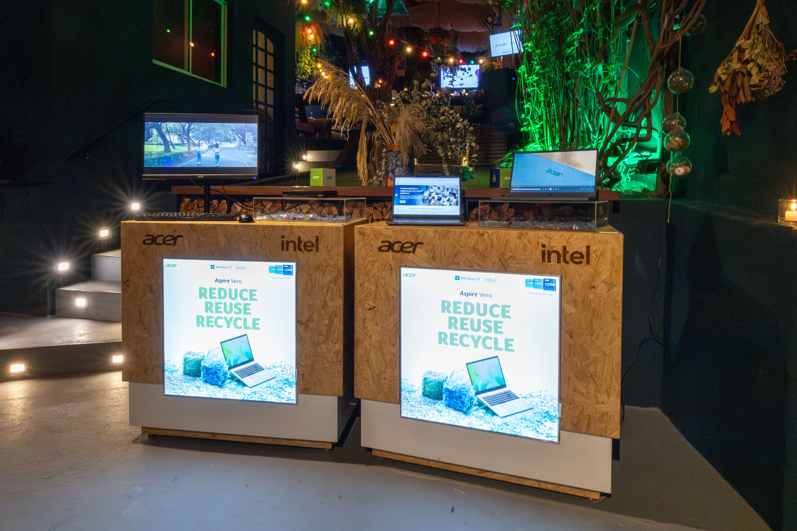
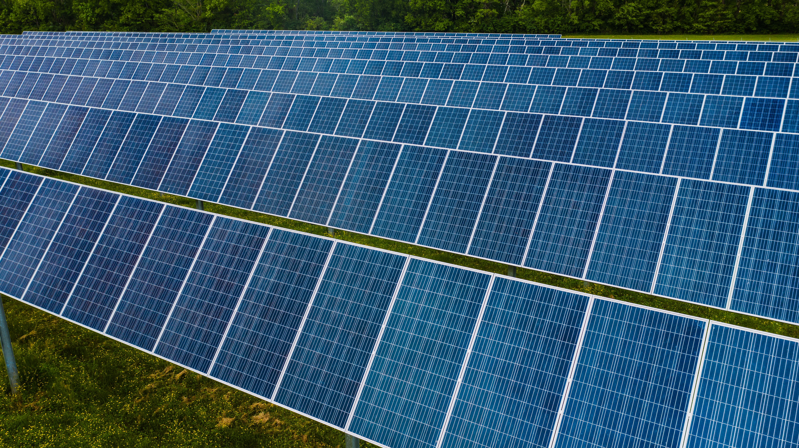
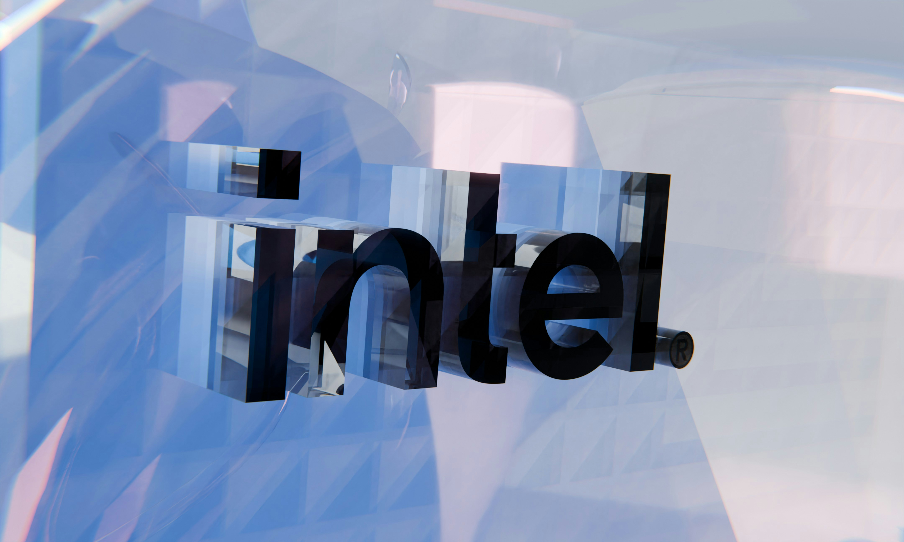

Scroll to view timeline | Hover over cards to learn more!
1968
Intel Founded

1971
First Microprocessor

1978
8086 Processor

1985
386 Processor

2006
Peak GHG Emissions

2020
RISE Strategy

2022
Net-Zero By 2040
2023
Renewable Electricity

2024
Sustainability Summit

RISE Strategy
Under its RISE (Responsible, Inclusive, Sustainable, Enabling) strategy, Intel sets ambitious 2030 goals, including driving industry-wide progress on climate action, water stewardship, and waste reduction.
Learn MoreCommitment
In 2022, Intel pledged to achieve net-zero greenhouse gas emissions (Scope 1 and 2) by 2040. This commitment builds on decades of environmental initiatives and partnerships across the semiconductor industry.
Learn MoreWater & Waste
Intel conserves billions of gallons of water annually and collaborates with local communities to restore watersheds. Intel also upcycles and recycles materials to reduce waste and advance a circular economy.
Learn More